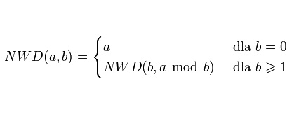

Algorytmy
Algorytm Euklidesa
Algorytm Euklidesa to jeden z najbardziej znanych, ale i najstarszych dzisiaj stosowanych algorytmów. Służy on do wyliczania największego wspólnego dzilenika.
Najpierw pokażę przykład działania algorytmu dla wartości 243 i 111:
nwd (243, 111) = nwd(111, 21) = nwd(21, 6) = nwd(6, 3) = 3
Cały algorytm można przedstawić za pomocą jednego warunku:
Podaj dwie liczby
a:
b:
Obliczenia:
NWD:
Kliknij "Run" i poczekaj chwilę
Jeśli a jest podzielne przez b, to wtedy nwd(a, b) = b
W przeciwnym razie nwd(a, b) = nwd(b, a mod b)
Może się to wydawać dość nieintuicyjne, ale wszelkie możliwe wątpliwości rozwieje dowód:
D = nwd(a, b), z tego wynika, że (b*n+r) mod b = 0.
Z definicji nwd wynika także, że b mod d = 0. Wnisosek nasuwa się praktycznie sam, mianowicie